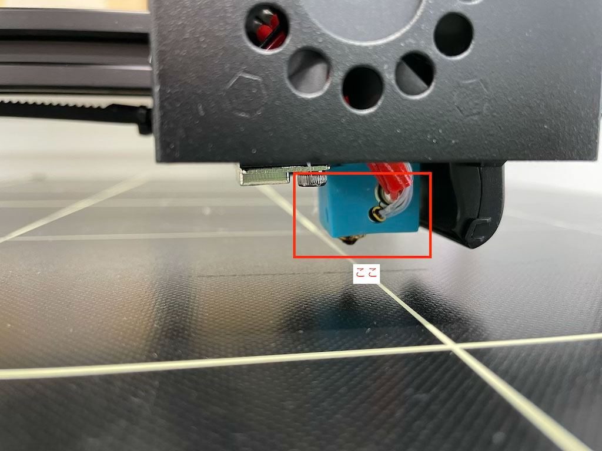
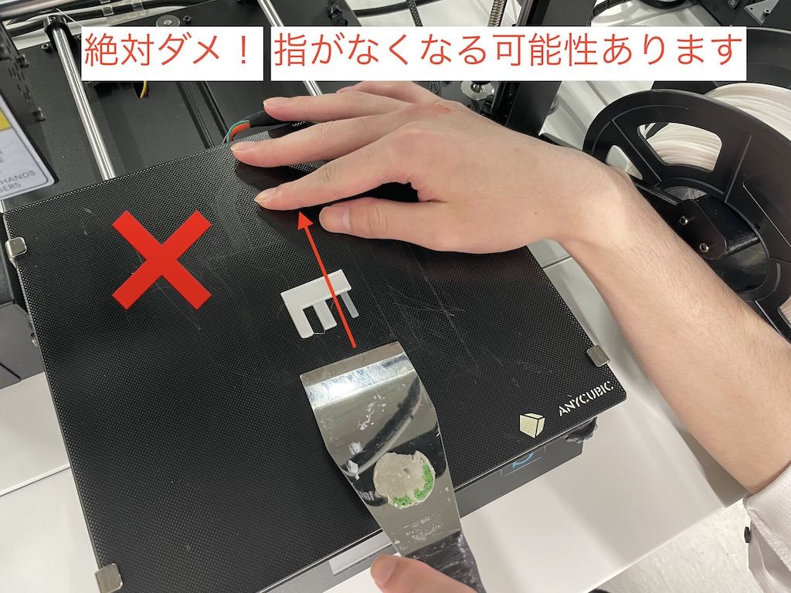
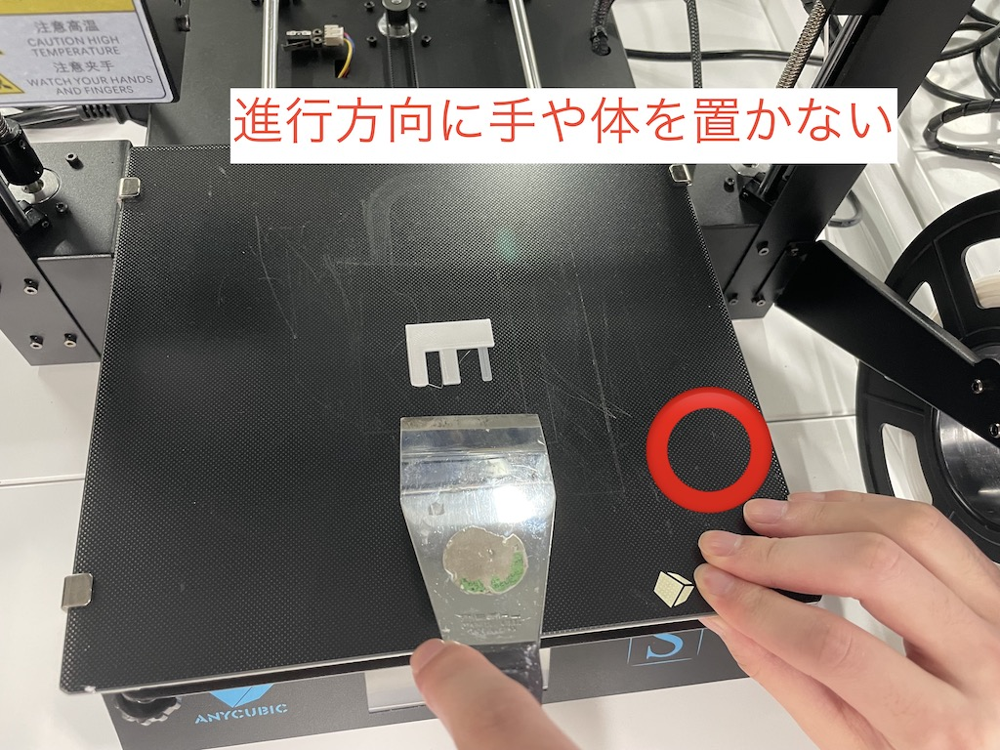

Step0-3Dプリントまでの基本的な流れ
3Dモデリング
stlファイルとして保存
g-codeに変換
g-codeファイルを使って3Dプリンターに出力
Step1-3Dモデリング
3DCADの操作
Fusion360の操作
(先輩たちが作ってくれたサイト)
YouTube:メイカーズラブ
（外部サイト）
YouTube初心者向けFusion360解説
（外部サイト）
Step2-stlファイルとして保存
Fusion360で作った3Dモデルを3Dプリンターで出力すためには
まず、モデリングしたモデルをstlファイルという一般的な3Dモデルのファイルとして保存します。
Fusion360で作った形をstlファイルに出力する方法
Step3-g-codeに変換
stlファイルは3Dモデルのファイルです。
stlファイルをもとに一層ずつに分解して積み重ねていく命令に変換されたものがg-codeファイルです。
つまり、g-codeとは3Dプリンターに動きを指示する指示書のようなファイルですね。
3Dプリンターによってサイズなどが異なるため、g-codeファイルは使う3Dプリンターに合わせて作る必要があります。
Curaのインストール方法
（ダウンロードサイトは
こちら
）
Curaのプリンター設定と日本語化
stlファイルをg-codeファイルに変換する方法
Step4-3Dプリンターで出力
g-codeファイルを持ってファブラボへGo! ファブラボスタッフの方が3Dプリント方法を教えてくれます。
（設定を変える必要があるかもしれないので、stlファイルも一緒に持ってきましょう）
3Dプリンターの操作手順
3Dプリンターのメンテナンス手順
安全上の注意
3Dプリンターは比較的安全な工作機です。素材がでてくるノズル近辺は200℃前後になっているので、プリント中は触らないでください。

プリント終了後に印刷物がテーブルから剥がれない場合、スクレーバーという刃物を使って剥がします。
スクレーバーは刃物なので、絶対に進行方向に手や体を行いようにしましょう。【大怪我】につながります。

